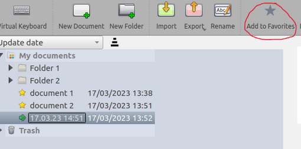
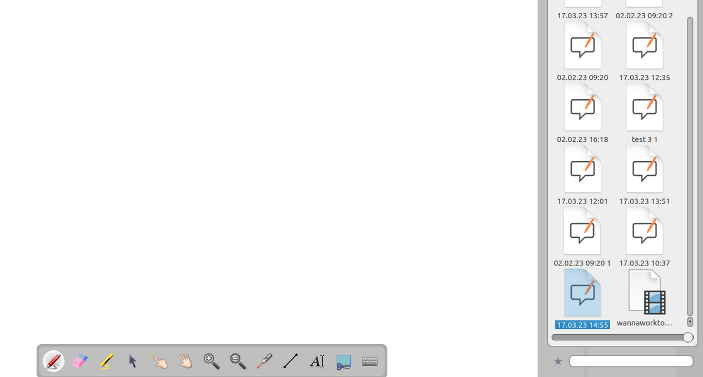

Aggiungi documenti OpenBoard ai preferiti
Con OpenBoard 1.7, puoi aggiungere documenti OpenBoard ai tuoi preferiti!
Per farlo, vai alla Modalità Documenti, seleziona un documento e clicca su nella barra degli strumenti dei Documenti.
nella barra degli strumenti dei Documenti.

Cambia rapidamente tra i documenti
I tuoi documenti preferiti appariranno nella Libreria OpenBoard, sotto
Ogni documento OpenBoard ( ) può quindi essere trascinato sulla Lavagna!
) può quindi essere trascinato sulla Lavagna!

 Puoi utilizzare la barra di ricerca in fondo alla Libreria OpenBoard per trovare rapidamente un documento per il suo nome
Puoi utilizzare la barra di ricerca in fondo alla Libreria OpenBoard per trovare rapidamente un documento per il suo nome
Documenti aperti di recente
Ogni documento che apri viene temporaneamente aggiunto ai preferiti, in modo da poter passare tra ognuno di essi durante una sessione, senza la necessità di contrassegnarli esplicitamente come preferiti.

Se desideri aggiungere permanentemente un documento aperto di recente tra i tuoi preferiti, puoi farlo tramite la Libreria OpenBoard: selezionalo e clicca su